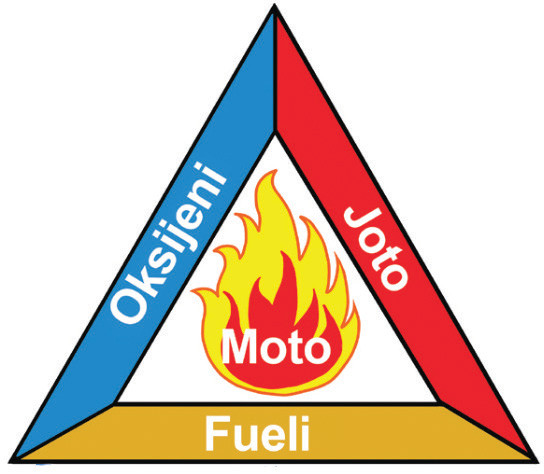

Hivyo, kitu kimojawapo kikikosekana uunguaji wa vitu hauwezi kutokea.

Kielelezo namba 1: Pembetatu ya moto
Umuhimu wa gesi ya oksijeni katika uunguaji wa vitu
Jaribio namba 1:Kuchunguza umuhimu wa gesi ya oksijeni katika uunguaji.
Lengo:
Kuonesha umuhimu wa hewa ya oksijeni katika uunguaji wa vitu
Mahitaji:
Kiberiti, mishumaa miwili, chombo angavu chenye uwazi upande mmoja au jagi lenye kuzuia hewa kupita, saa na meza
Hatua
1. Chukua mishumaa miwili kisha iwekee alama A na B.
2. Chukua kiberiti na uwashe mishumaa yote miwili.
3. Funika mshumaa B kwa kutumia chombo angavu chenye uwazi upande mmoja kuzuia hewa isipite